Cray-X Kurzreferenz
Start InfoCray-X Kurzreferenz
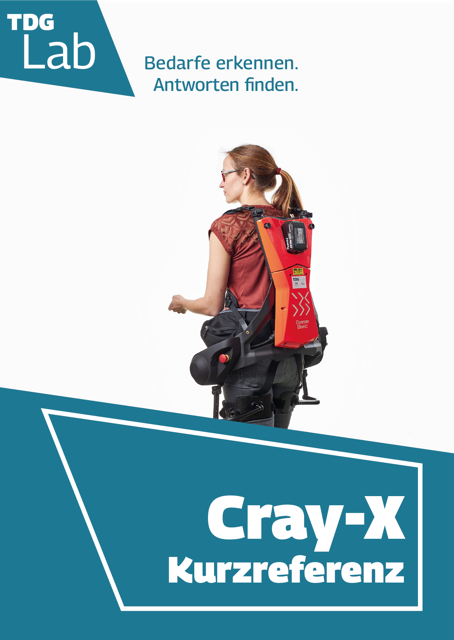
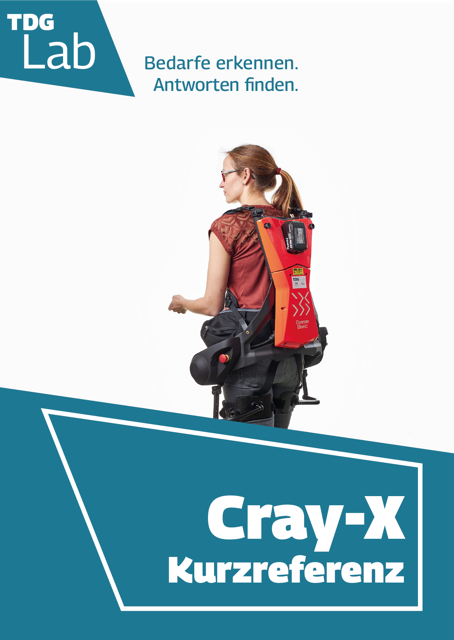
Ein Projekt für den Kurs Mobile Dokumentation im Wintersemester 2022/23 im Studiengang Informationsdesign & Medienmanagement, umgesetzt mit DocBook und jQuery Mobile.
Master IDMM22 | Text- und Bildinhalte: Margit Rosenburg / Lisa Tschirner / Isabel Mallqui Chacón
Mobile Umsetzung: Margit Rosenburg
© 2023 Hochschule Merseburg / Fachbereich WIW
Hochschule Merseburg
Fachbereich WIW
Margit Rosenburg
Eberhard-Leibnitz-Str. 2
06217 Merseburg
Deutschland
☎ +49 3461 46 2424
📧 margit.rosenburg@stud.hs-merseburg.de
24.01.2024
Der Rücken bei jeder Bewegung gerade gehalten. Dies verhindet eine ungesunde Rückenkrümmung und Spitzenbelastungen der Bandscheiben.
Das Aufrichten und Absenken des Oberkörpers durch Elektromotoren unterstützt. Dies schont die Rückenmuskulatur.
Die Muskulatur bei Arbeiten in Vorbeuge-Haltungen vor dauerhafter Anspannung geschützt.
Heben und Bewegen von Patientinnen und Patienten.
Heben aus Betten in Rollstühle & umgekehrt.
Hilfe bei medizinischen Untersuchungen.
Anheben beim Waschen & Umziehen.
Hilfe bei der Umlagerung von immobilen Pflegebedürftigen.
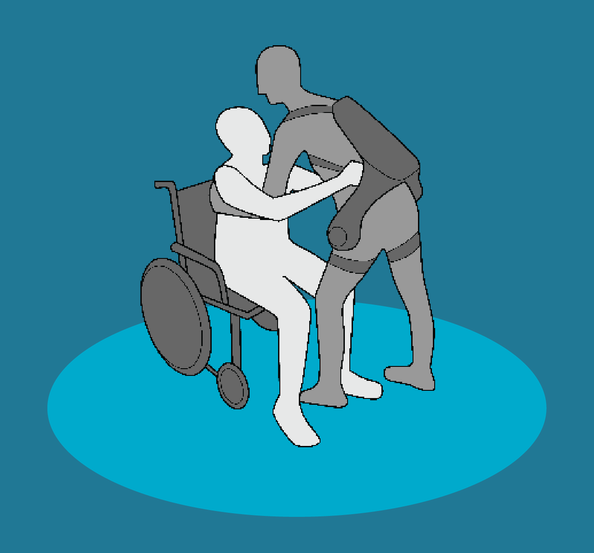
Schwangeren und nicht eingewiesenen Personen ist die Benutzung des Cray-X untersagt.
Sturzgefahr! Gurte und Beinanbindungen können an Gegenständen hängen bleiben. Achten Sie auf ausreichenden Platz! Vermeiden Sie schnelles Gehen und Rennen! Besteigen Sie keine Leitern mit dem Cray-X!
Falsch angelegte Gurte können zu Verspannungen und Hautirritationen führen. Beachten Sie die ausführlichen Hinweise im Online-Handbuch!
Entfernen Sie bei Nichtnutzung des Cray-X immer den Akku, um unkontrollierte Motorbewegungen auszuschließen. Beachten Sie die Angaben des Herstellers zur Lagerung.
Beachten Sie auch die ausführlichen Sicherheitshinweise im Online-Handbuch!
Minimale Raumbreite bei Verwendung: 113,5 cm.
Vor Wasser- und Staubeindringung schützen!
Vor direkter Sonneneinstrahlung schützen!
Nur im Innenbereich betreiben!
Dient zum sofortigen Ausschalten des Cray-X in einer gefährlichen Situation.
Notaus auslösen:
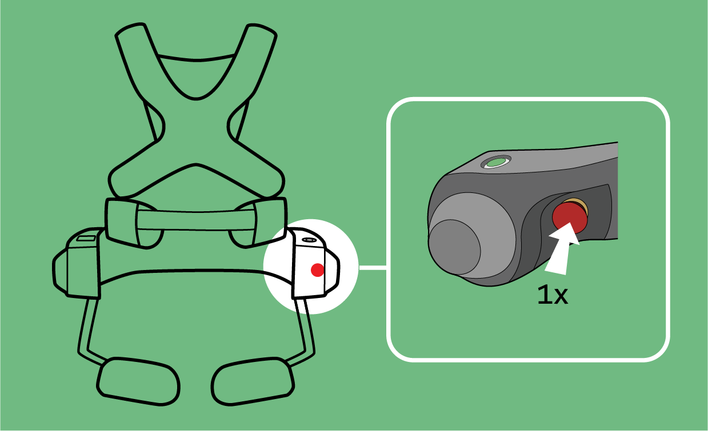
Notaus zurücksetzen:
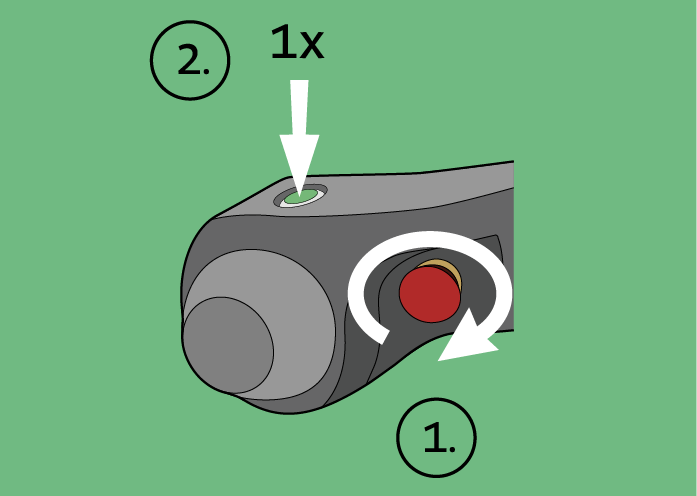
Drehen Sie den Notaus-Knopf im Uhrzeigersinn bis er herausspringt.
Bestätigen Sie mit dem Ein-Aus-Knopf das Rücksetzen.
Nach dem Zurücksetzen zeigt das Display die zuletzt aktive Anwendung.
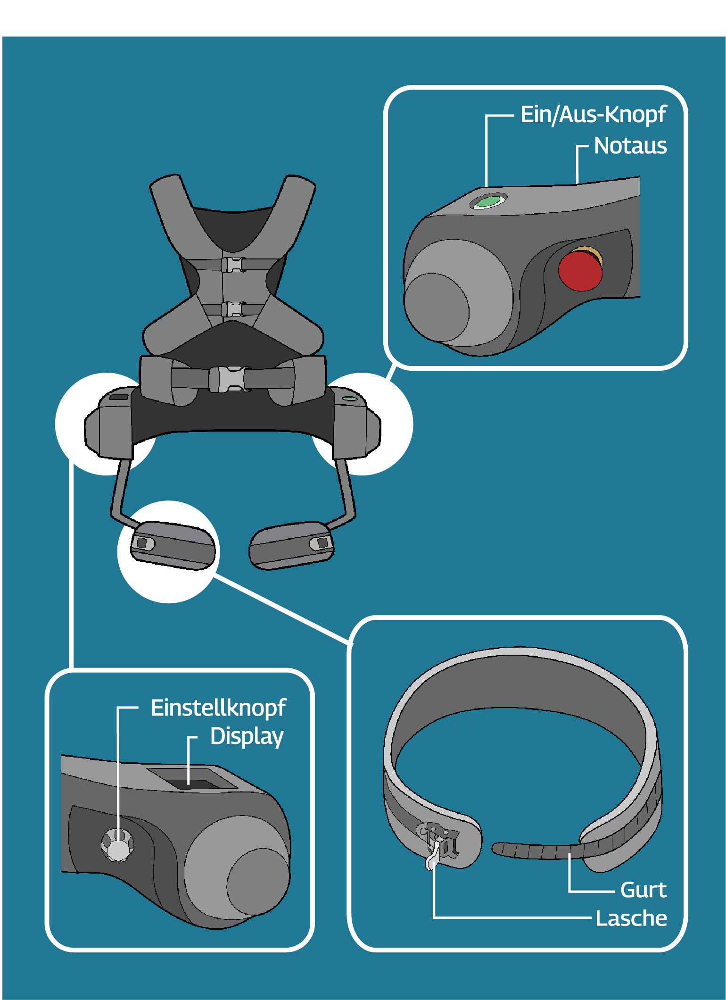
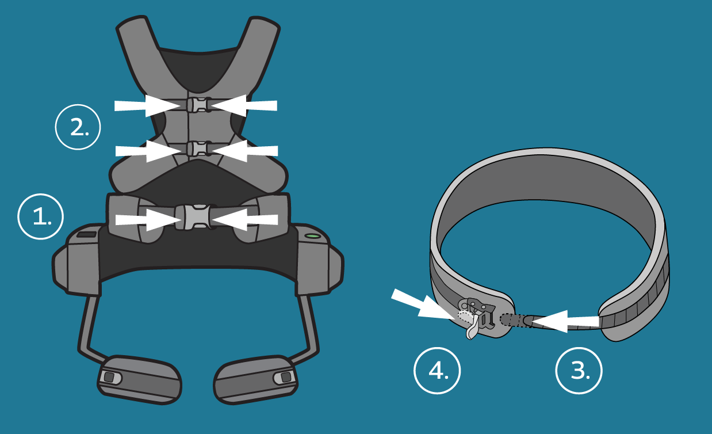
Schließen Sie zuerst den Beckengurt.
Stellen Sie sicher, dass der Beckengurt die Hüftknochen eng umschließt.
Schließen Sie nun die beiden Brustgurte.
Fädeln Sie den Gurt ein und arretieren sie ihn mit der Lasche.
Zum Lösen: Heben Sie die Lasche an.
Stehen Sie währen des Kalibriervorganges aufrecht und ruhig.
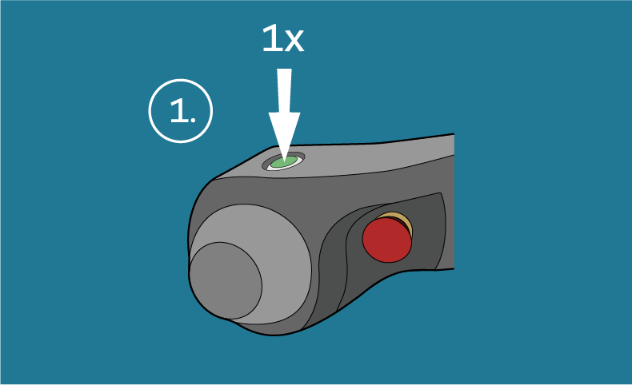
Drücken Sie den Ein/Aus-Knopf einmal.
Das Display zeigt den Kalibrierungsassistenten mit einer Abbildung der eigenen Körperhaltung.
Folgen Sie den Display-Hinweisen zur Körperhaltung.
Am Ende eines erfolgreichen Kalibriervorgangs erscheint der Hauptbildschirm auf dem Display.
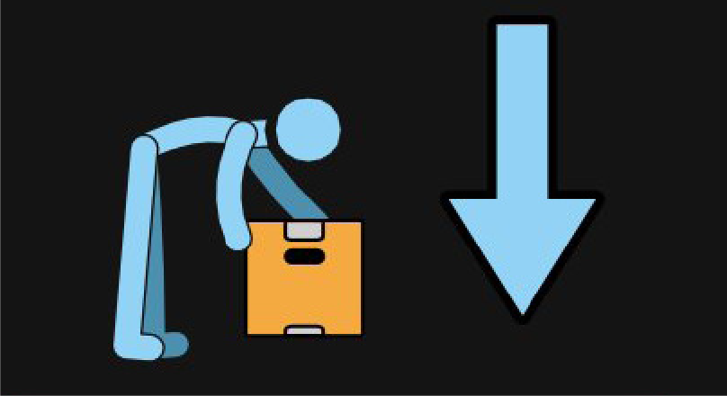
Blauer Pfeil = Profil Ablegen
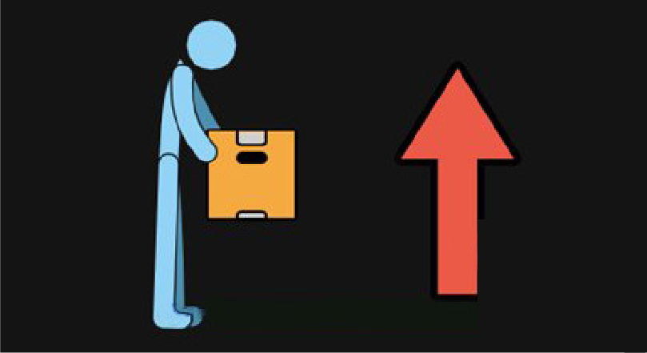
Roter Pfeil = Profil Anheben
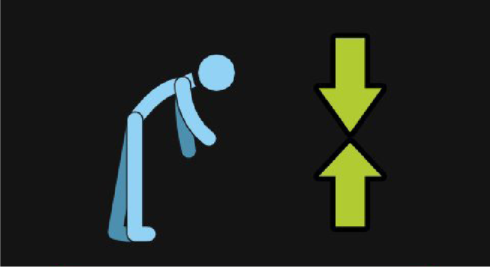
Grüner Pfeil = Profil Halten
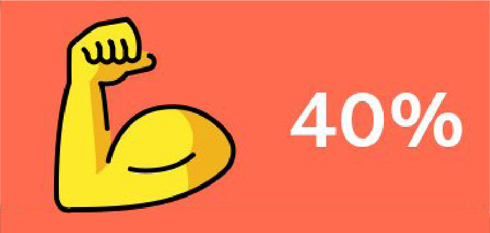
Unterstüztungsgrad = Kraft, die beim Aufrichten hilft
Gegenkraft = Kraft, die den Oberkörper in der Vorbeuge festhält
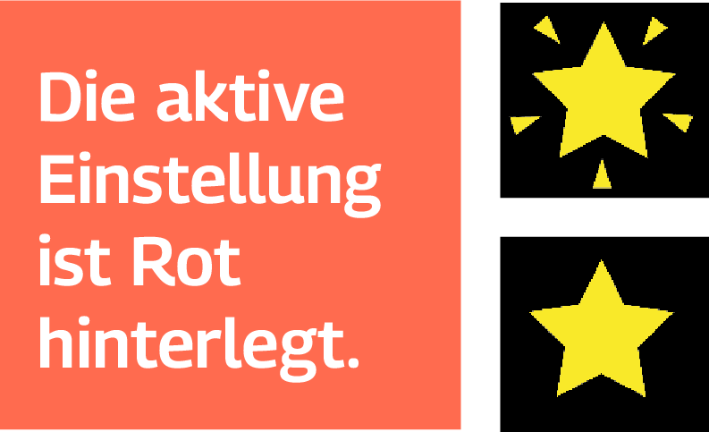
Stern = zuvor genutztes Profil
Blinkender Stern = derzeit aktives Profil
Verletzungsgefahr durch Verwechslung des Profils! Ein ungeeignetes Profil kann zu unerwarteten Bewegungen führen.
Prüfen Sie bei jeder Benutzung den aktuellen Modus über das Display!
Das Display muss dazu den Hauptbildschirm zeigen.
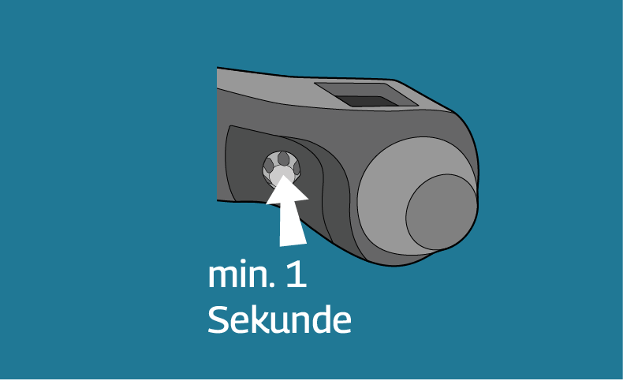
Drücken Sie den Einstellknopf mindestens eine Sekunde lang.
Das Display zeigt die drei Profile „Anheben“ , „Halten“ und „Ablegen“ mit den eingestellten Werten.
Drehen Sie den Einstellknopf, um ein Profil zu wählen. Drücken Sie einmal zur Bestätigung.
Nützlich, um schnell zwischen Hebe/Absenkaufgaben & Halteaufgaben zu wechseln, ohne die Werte für Unterstützungsgrad und Gegenkraft neu einstellen zu müssen.
Das Display muss dazu den Hauptbildschirm zeigen.

Drücken Sie den Einstellknopf zwei mal kurz nacheinander.
Das zuvor verwendete Profil ist nun aktiv. Das Display zeigt die eingestellten Werte an.
Änderungen der Prozentwerte können vom Hauptbildschirm aus eingestellt werden.
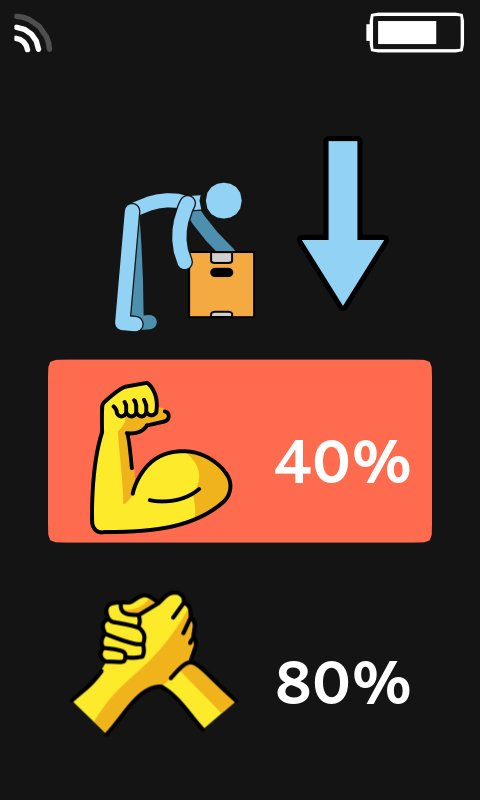
Drücken Sie den Einstellknopf, um zu einem anderen Einstellwert zu springen.
Die aktive Einstellung ist Rot hinterlegt.
Drehen Sie den Einstellknopf, um den Prozentwert zu ändern.
Die Änderungen werden für das entsprechende Profil sofort gespeichert.
Mit einem langen Klick gelangt man von jedem beliebigem Bildschirm wieder zurück zum Hauptbildschirm.

Drücken Sie den Ein/Aus-Knopf einmal zum Starten des Leerlaufmodus.
Das Cray-X unterstützt nun nicht mehr aktiv die Bewegungen. Das Display zeigt ein Faultier.
Drücken Sie den Ein/Aus-Knopf 1x zum Beenden des Leerlaufmodus.
Der Leerlaufmodus ist beendet. Das Display zeigt den Haupbildschirm mit zuletzt aktivem Profil.
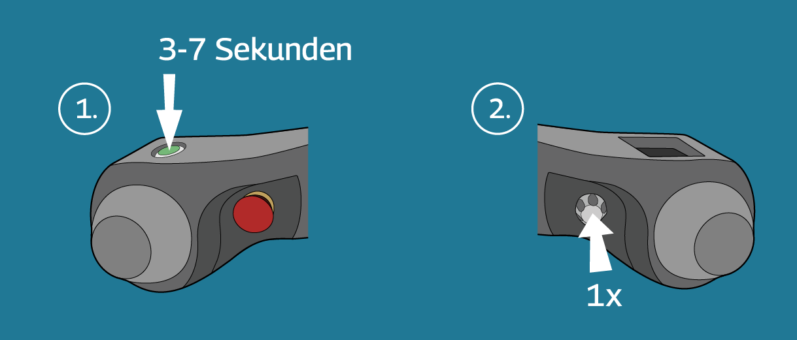
Drücken Sie den Ein/Aus-Knopf mindestens drei bis maximal sieben Sekunden lang.
Die Motoren schalten sich ab. Auf dem Display wird eine Bewertungsskala von 0 bis 10 angezeigt.
Drücken Sie den Einstellknopf einmal zur Bestätigung.
Das Display zeigt einen Hinweis auf die Gewichtskompensation und den Akkuladezustand. Der Einschaltknopf blinkt nicht mehr.
Legen Sie das Exoskelett ab. Entnehmen Sie den Akku.
Das Cray-X ist nun vollständig abgeschaltet.
German Bionic Systems GmbH
August-Wessels-Strasse 23
86156 Augsburg
☎ +49 (0) 821 907 497 80
Hersteller-Website: germanbionic.io
Vollständiges Cray-X Online-Handbuch
Medizinische Fakultät Martin-Luther-Universität Halle-Wittenberg Skills Lab — Projekt TDG
Magdeburger Straße 12
06112 Halle (Saale)
TDG-Website: inno-tdg.de